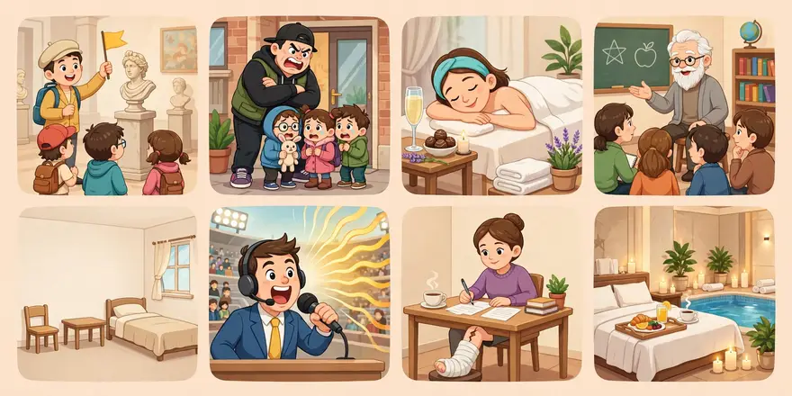
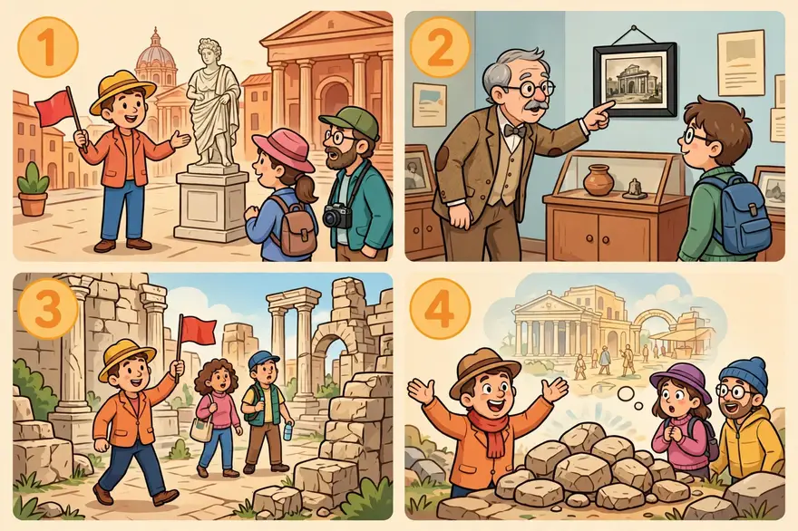
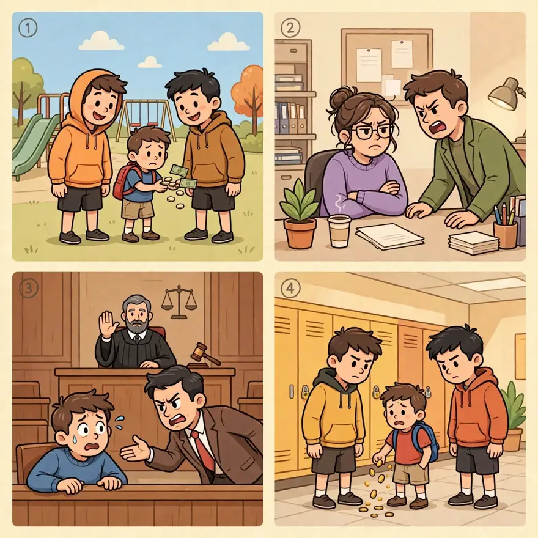
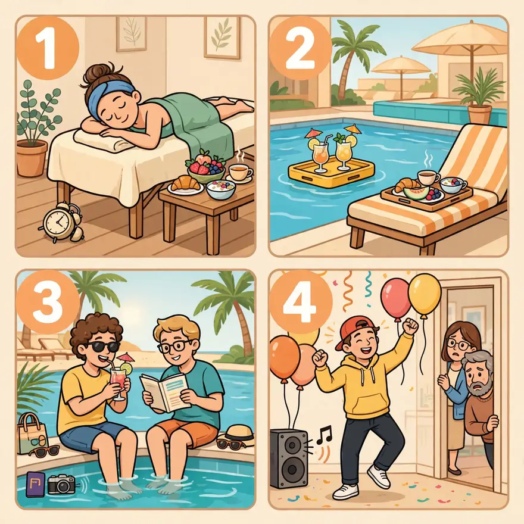
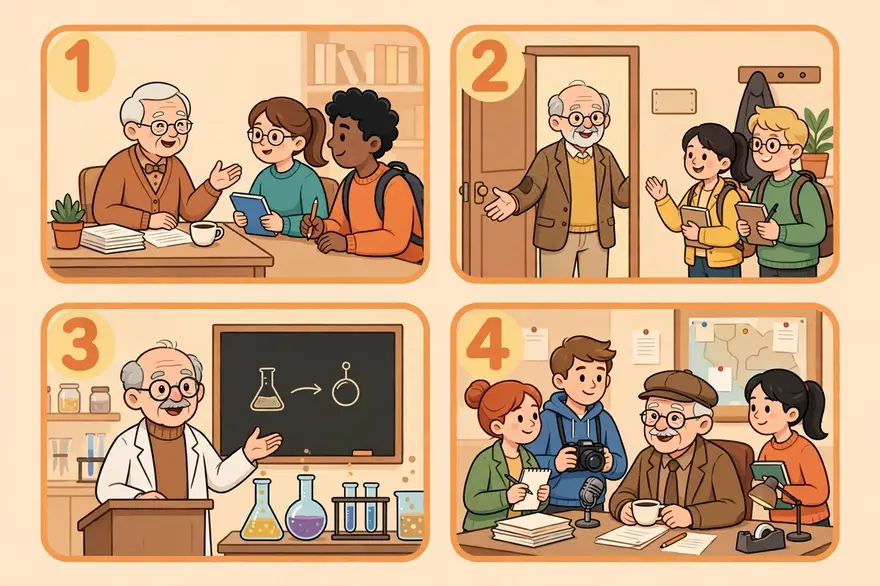
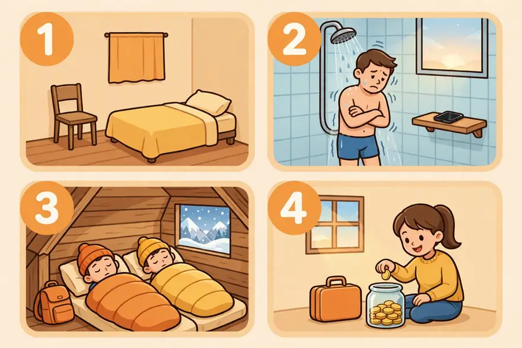
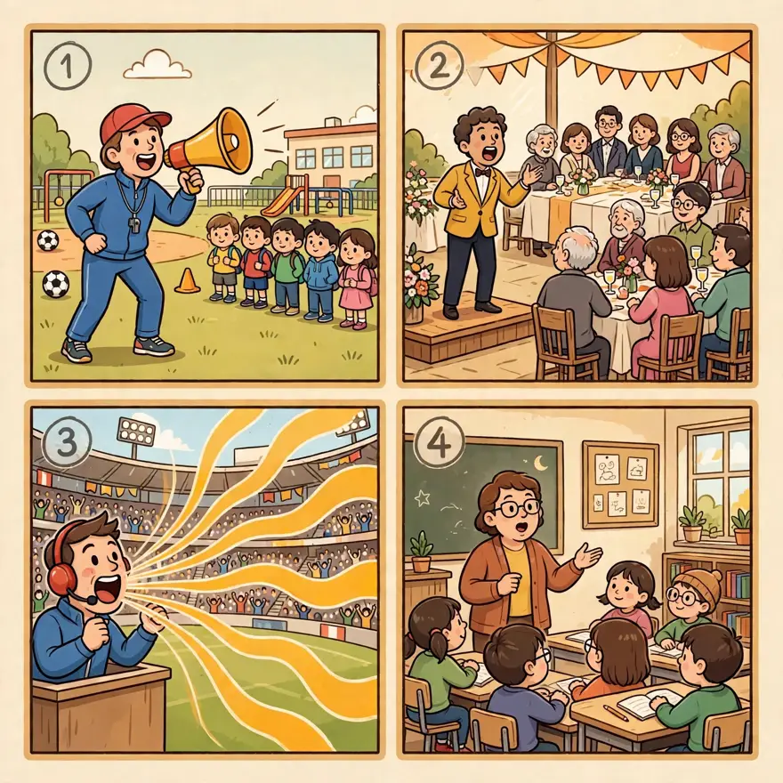
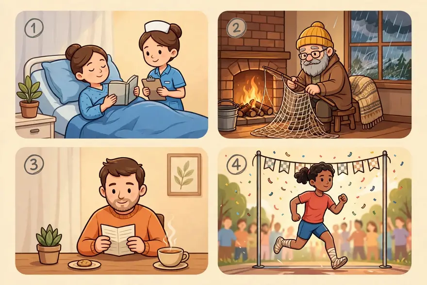
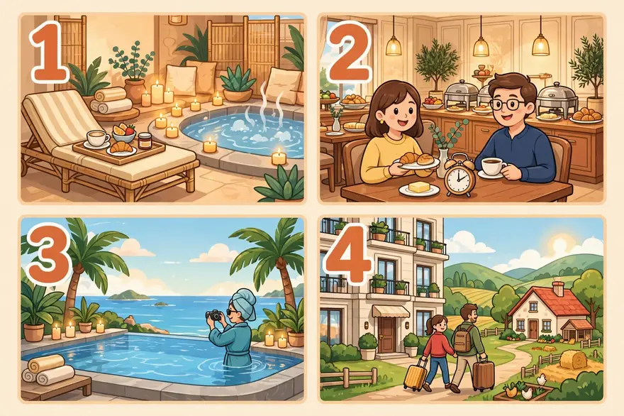
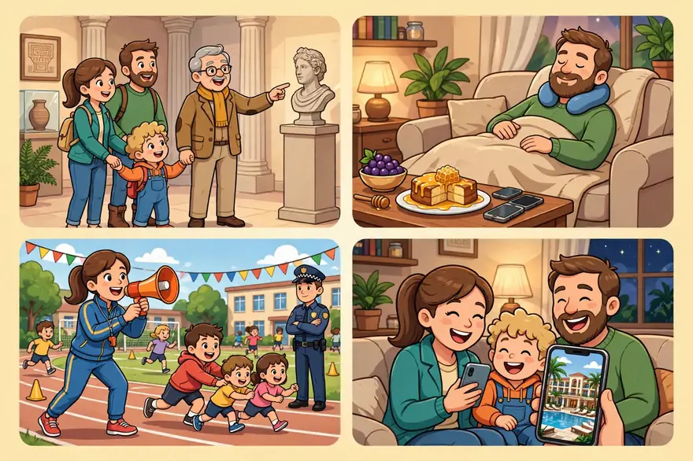

点开单元看词根；带链接的是已上线词根，其余陆续制作中。
词汇课首页 › Unit 1 › ★ 神话与历史
🔊 板块发音：/mɪˈθɒlədʒi/（mythology：希腊语 mythos「神话」+ -logy「学问」）
Our school's Greek Culture Week opened this morning, and in a single day we lived the whole of ancient Greece. First, a retired history teacher — our very own nestor — led us around the school museum like a cicerone, telling the story of every photo on the wall. At noon came the hedonism lunch: honey cakes, grapes and iced tea, no homework allowed. In the afternoon, the PE teacher announced the spartan challenge in a stentorian voice that reached the back rows: one chair, one bottle of water, a five-kilometre run, and no phones. The idea came from the Spartan Race in Moganshan last weekend, where more than 4,000 runners took part. A big boy tried to hector the younger kids, but our school guard — who reads a page of The Daily Stoic every morning — stood by with stoic calm, and the bully thought better of it. The week ends tonight at a nearby sybaritic hotel, with a spa, a pool and breakfast in bed — our own little Hedonism II, the Jamaican resort that took that name in 1981. The teachers have earned it.
本则为自创热点段子：学校希腊文化周、午餐、挑战赛、门卫读《每日斯多葛》均为编的场景。但里面嵌了三条真实信息：2026 年 11 月 7 日，斯巴达勇士赛莫干山站在浙江德清举行，4,000 多名中外选手参赛（CGTN 2026-11-08 报道）；牙买加 Hedonism II 度假村 1976 年以 Negril Beach Village 之名开业，1981 年改名 Hedonism II（Wikipedia）；《每日斯多葛》（The Daily Stoic）2016 年出版，出版方称自出版以来销量超 300 万册。
这一课的 8 个词，全是「人名地名变单词」：4 个来自人名——赫克托耳、涅斯托尔、斯滕托尔都是《伊利亚特》里的人物，西塞罗是古罗马最伟大的演说家；2 个来自地名——斯巴达和叙巴里斯，都是古希腊的城邦；2 个来自学派——享乐主义和斯多葛主义，是古希腊两种对立的人生哲学。一个名字变成单词时，往往只取了那个人最出名的一面，有时甚至是被误读的一面：赫克托耳本人是《伊利亚特》里的暖男，词义却是「恶霸」；伊壁鸠鲁主张节制简朴，享乐主义却被当成纵欲的代名词。学这一课，等于把《伊利亚特》、古希腊城邦和两大哲学流派一次逛完。

在图片中，画面分成上下两排、每排四格：左上，一位举着黄色小旗的导游在博物馆里给三个孩子讲解一尊大理石雕像，对应 cicerone（导游）；左上第二格，一位穿绿马甲、戴黑帽子的大个子男生在公寓门口瞪着三个害怕的小孩，对应 hector（威吓）；右上第二格，一位女士趴在按摩床上闭目养神，旁边小桌上放着一杯香槟和一盒巧克力，对应 hedonism（享乐）；右上，一位白胡子老教师坐在黑板前给四个年轻人讲故事，对应 nestor（元老）；左下，一间空荡荡的小屋里只有一把椅子、一张小桌和一张单人床，对应 spartan（简朴的）；左下第二格，一位体育解说员对着话筒大声播报，身后是满场观众和一道道黄色声波，对应 stentorian（洪亮的）；右下第二格，一位腿上打着石膏的女士安静地坐在桌前批改作业，旁边放着一杯热茶，对应 stoic（坚忍的）；右下，一间豪华水疗房里有泳池、香薰蜡烛，床上放着一盘牛角面包、果汁和咖啡的早餐，对应 sybaritic（奢华享乐的）。
A guide, especially one who takes tourists to museums, monuments, or architectural sites and explains what is being seen.
• On Crete they sought out a highly recommended cicerone, hoping to receive the best possible introduction to the noteworthy historical sites.
The Roman statesman and orator Cicero was renowned for his elegant style and great knowledge (and occasional long-windedness). So 18th-century Italians seem to have given the name cicerone to the guides who would show well-educated foreigners around the great cultural sites of the ancient Roman empire—guides who sought to be as eloquent and informed as Cicero in explaining the world in which he lived.
向导，尤指带游客参观博物馆、纪念碑或建筑遗址并加以讲解的人。
例句：在克里特岛，他们找了一位备受推荐的导游，希望能对那些值得一看的历史遗址得到最好的介绍。
罗马政治家、演说家西塞罗以优雅的文风和渊博的学识闻名（偶尔也话多）。于是，18 世纪的意大利人似乎把 cicerone 这个名字给了那些带受过良好教育的外国人参观古罗马帝国伟大文化遗址的向导——这些向导在讲解西塞罗生活的那个世界时，力求像西塞罗一样雄辩、博学。
—— 下面是我的讲解 ——
🧠 记忆妙招：本义指带游客参观博物馆、古迹、建筑并讲解的人，词源是意大利语 cicerone，来自 Cicerone——古罗马演说家西塞罗（Marcus Tullius Cicero，公元前 106–前 43 年）的意大利语名（Merriam-Webster 词史）。西塞罗被后世记为最伟大的罗马演说家（Britannica）。为什么拿导游比西塞罗？词典的措辞都很谨慎——presumably / it is believed：人们相信，是因为西塞罗以博学和雄辩著称，导游也以能说、善讲解著称，于是把导游比作「小西塞罗」。Etymonline 的表述更俏皮：a local guide to antiquities and curiosities in Italy，1726 年用例，传统上这样称呼本地导游，指其 florid loquacity（华丽的健谈）。最早用例：Merriam-Webster 记首用 1726 年；Wikipedia 汇总 OED 说法，最早引文出自 Joseph Addison 的《论奖章对话》（死后于 1726 年出版）。现代最硬的「活化石」用例在啤酒界：Cicerone® Certification Program（啤酒侍酒师认证），2007 年由酿酒师、作家 Ray Daniels 创立，目的是确保消费者每次饮酒都得到好品质啤酒；2008 年 1 月 3 日其 Certified Beer Server 在线考试首次上线；认证分四级，最高级为 Master Cicerone®（Cicerone.org 官网）。从「带你游古迹的博学向导」变成「带你游啤酒世界的博学向导」——创始人 Ray Daniels 是 repurposed 了 cicerone 一词（《牛津啤酒指南》词条）。趣味旁支（存疑，勿讲死）：Etymonline 称 Cicero 这个名字本身 evidently is related to cicer（鹰嘴豆）——可作笑点，但要标注是词源学推测。慎用：「意大利导游因为特别能说，所以被叫作西塞罗」是传统解释／学界推测，不是确凿史实，须说「据词典说法，人们相信……」。
💡 场合与语境：旅游、博物馆、古迹讲解是它的主场；也可泛指任何博学健谈的向导——啤酒界的 Cicerone® 认证就是现成的例子。
🔁 高级替换：写旅行见闻，a knowledgeable cicerone 比 a good guide 更有文化味；写「讲解员」通用词还是 guide、docent（博物馆讲解员）。
⚠️ 注意：它带「博学、健谈」的褒义，别拿它说只会背台词的导游；发音有英式／意式差异，/ˌsɪsəˈroʊni/ 与 /ˌtʃɪtʃəˈroʊni/ 都对，不要把某一种读法说成唯一正确。
写作：写旅行见闻用 a knowledgeable cicerone（一位博学的导游），比 a good guide 更有文化味；写「导游」通用词还是 guide、tour guide，cicerone 偏书面、带文学味。
✏️ 拼写：ci-ce-ro-ne；名字来自西塞罗 Cicero，拼写里藏着他的名字；英式、意式读法略有不同，/ˌsɪsəˈroʊni/ 和 /ˌtʃɪtʃəˈroʊni/ 都对，别只认一种。
例句：

图片四格与下面 ①②③④ 四个例句一一对应。
① Our cicerone in Rome knew the story of every statue in the museum.
我们在罗马的那位导游，知道博物馆里每一尊雕像背后的故事。
② The old teacher is the best cicerone for our school museum — he can talk about one photo for half an hour.
这位老教师是我们校史馆最好的讲解员——一张照片他能讲上半小时。
③ We hired a cicerone to show us around the ancient ruins.
我们请了一位导游，带我们参观古代遗址。
④ A good cicerone can make a pile of old stones come alive.
一位好导游能让一堆古老的石头活过来。
To bully or harass by bluster or personal pressure.
• He would swagger around the apartment entrance with his friends and hector the terrified inhabitants going in and out.
In Homer's great Iliad, Hector was the leader of the Trojan forces, and the very model of nobility and honor. In the Greek war against Troy, he killed several great warriors before being slain by Achilles. His name began to take on its current meaning only after gangs of bullying young rowdies, many of them armed soldiers recently released from service following the end of the English Civil War, began terrorizing the residents of late-17th-century London. The gangs took such names as the Roysters, the Blades, the Bucks, and the Bloods, but the best-known of them was called the Hectors. The names Blades and Hectors may have seemed appropriate because, like Hector and Achilles, they often fought with swords.
以虚张声势或人身施压来欺凌、骚扰。
例句：他常和朋友们在公寓门口大摇大摆地晃悠，威吓那些吓得不轻的进出居民。
在荷马伟大的《伊利亚特》中，赫克托耳是特洛伊军队的领袖，是高贵与荣誉的典范。在希腊人攻打特洛伊的战争中，他杀死了几位伟大的战士，最后死于阿喀琉斯之手。他的名字开始带上今天这个意思，要等到一群欺凌弱小的年轻恶少——其中许多人是英国内战结束后刚退役的武装士兵——开始恐吓 17 世纪末伦敦居民之后。这些帮派给自己起了「狂徒帮」「利刃帮」「雄鹿帮」「血帮」等名字，但最出名的一伙叫「赫克托耳帮」。「利刃」和「赫克托耳」这两个名字也许显得贴切，因为和赫克托耳、阿喀琉斯一样，他们也常常舞刀弄剑。
—— 下面是我的讲解 ——
🧠 记忆妙招：原典人物赫克托耳是特洛伊国王普里阿摩斯与王后赫卡柏的长子、妻子安德洛玛刻，特洛伊军队首席战士。《伊利亚特》把他塑造成理想战士、特洛伊的支柱，「以最正面的色彩描绘：好儿子、深情的丈夫和父亲、可信的朋友」；第 6 卷他与安德洛玛刻告别是最动人的段落之一；最终他被阿喀琉斯杀死，全诗以他的葬礼收尾（Britannica）。词义大反转是核心卖点：Merriam-Webster 明说，「威吓、骚扰」义很可能受 17 世纪伦敦一群自称 Hectors 的喧闹街头恶少影响——他们自以为是潇洒的年轻侠客，在普通人眼里却是虚张声势的恶霸，恐吓路人、破坏财物。Oxford Learner's 措辞相同：原指英雄，后来义变为 braggart or bully，在 17 世纪晚期用于指伦敦青年帮派成员。年代锚点：名词本义（指赫克托耳本人）首见 14 世纪，动词首见 1660 年。演变链一句话：伟大战士之名 → 伦敦恶少借名壮胆、自封 Hectors → 公众把这名字记成「恶霸」→ 名词转类为动词 hector。真实用例：Merriam-Webster 例句即「法官命律师停止 hectoring the witness（以咄咄逼人的盘问威吓证人）」。文学彩蛋：《哈利·波特》里有 Hector Dagworth-Granger，非凡药剂师协会创始人，《混血王子》第 9 章被提及——只是借用古典人名，与动词「恶霸」义无关，不要硬扯。慎用：「赫克托耳是恶霸」是对原典的彻头彻尾的误读；帮派说法在权威词典里是 likely／可能的影响，不是帮派档案实锤的定论，表述用「词典认为很可能……」，不要添加查无实据的帮派细节。
💡 场合与语境：法庭、职场、体育新闻里说「以咄咄逼人的方式威吓、纠缠」；日常口语说 bully 就够了，hector 偏书面、带「虚张声势」那层意思。
🔁 高级替换：写「盘问证人」用 hector the witness，是法庭报道的固定搭配；写「纠缠某人」用 hector sb into doing sth（威吓某人做某事）。
⚠️ 注意：hector 是动词，别当名词用（名词「恶霸」义是 17 世纪的旧用法，今天几乎只用作动词）；它的宾语是被威吓的人，hector sb，不是 hector at sb。
写作：写「盘问证人」用 hector the witness（威吓证人），是法庭报道的固定搭配；写校园霸凌，a bigger boy hectored the younger ones 比 bullied 更有画面感——带「虚张声势」那层意思。
✏️ 拼写：hec-tor；就是英雄 Hector 的名字原样变来的动词；过去式 hectored，现在分词 hectoring；注意别和 hectare（公顷）看混。
例句：

图片四格与下面 ①②③④ 四个例句一一对应。
① The older boys hectored the younger ones into giving them their lunch money.
几个高年级男生威吓低年级同学，逼他们交出午饭钱。
② Stop hectoring me — I already said I will finish it tonight.
别再对我施压了——我已经说了今晚一定做完。
③ The lawyer was told to stop hectoring the witness.
律师被要求停止以咄咄逼人的方式盘问证人。
④ The bigger boys hectored him until he gave them his pocket money.
几个大孩子一直威吓他，直到他交出了零花钱。
An attitude or way of life based on the idea that pleasure or happiness should be the chief goal.
• In her new spirit of hedonism, she went out for a massage, picked up champagne and chocolate truffles, and made a date that evening with an old boyfriend.
Derived from the Greek word for “pleasure,” hedonism over the ages has provided the basis for several philosophies. The ancient Epicureans and the 19th-century Utilitarians both taught and pursued hedonistic principles. But although we generally use the word today when talking about immediate pleasures for the senses, philosophers who talk about hedonism are usually talking about quiet pleasures that aren't pursued in a selfish way.
一种态度或生活方式，其理念是快乐或幸福应当是首要目标。
例句：抱着新近的享乐主义精神，她出门做了个按摩，买了香槟和巧克力松露，还和一位旧男友约了当晚见面。
hedonism 源自希腊语里表示「快乐」的词，千百年来为好几种哲学提供了基础。古代的伊壁鸠鲁学派和 19 世纪的功利主义者都信奉并践行享乐主义的原则。不过，虽然今天我们说起这个词时，一般是指眼前的感官快乐，但谈论 hedonism 的哲学家通常指的是那种安静的、不以自私方式追求的快乐。
—— 下面是我的讲解 ——
🧠 记忆妙招：词源来自希腊语 hēdonē「快乐」，与 hēdys「甜的、愉快的」同源（Merriam-Webster）。Merriam-Webster 定义：①认为快乐或幸福是生活中唯一或首要之善的学说；②以享乐主义原则为基础的生活方式；该词在英语中首见于 1827 年。两条哲学线必须分开讲：昔勒尼学派最激进——苏格拉底的学生昔勒尼的阿里斯提波（约公元前 435–356 年）主张人生目标应是当下的感官快乐（Britannica）；伊壁鸠鲁（约公元前 341–270 年）则被误解最深——Britannica 直言，没有任何学派比伊壁鸠鲁学派更受误解之害：他也说快乐是至善，但强调以理性、节制换取持久快乐、减少痛苦，人生目标是身体无痛苦（aponia）与心灵无扰乱（ataraxia）（Stanford Encyclopedia of Philosophy）。伊壁鸠鲁在《致梅诺伊凯乌斯的信》中亲自澄清：他说的快乐不是放荡者的快乐、不是沉溺于物质享受，而是身体无痛苦、灵魂无扰乱；他本人过简朴生活、吃简单食物。真实用例：牙买加 Negril 的 Hedonism II 度假村，1976 年以 Negril Beach Village 之名开业，1981 年改名为 Hedonism II；从未有过 Hedonism I；Hedonism III 1999 年开业、2010 年关张（Wikipedia）。动画《飞出个未来》里的 Hedonismbot（享乐机器人）是金色、呈躺卧姿势的机器人，不停从腹部的碗里吃葡萄，首次出现在 Crimes of the Hot 一集的机器人派对上（Wikipedia）。「Epicurean = 吃货」梗有真实语言事实托底：今天小写 epicurean / epicure 在词典里常指美食鉴赏家，但这恰恰与伊壁鸠鲁本人主张相反——教学资料明确点出：Epicurus was not an epicurean。慎用：头号误传「伊壁鸠鲁 = 纵欲享乐、胡吃海喝」是错的；日常英语里 hedonism 多带贬义，哲学语境里它是中性的伦理学理论家族，不要用度假村和 Hedonismbot 的形象去定义哲学概念。
💡 场合与语境：哲学、伦理学讨论里是中性理论词（享乐主义）；日常新闻、影评、生活方式报道里多带贬义，指纵欲、及时行乐。
🔁 高级替换：写「享乐主义者」用 hedonist；写「享乐的」用 hedonistic（a hedonistic lifestyle）；议论文对举：hedonism vs. stoicism，一追快乐、一忍痛苦。
⚠️ 注意：日常义与学术义要分清——说某人 hedonism 不等于说他是伊壁鸠鲁学派；伊壁鸠鲁本人主张节制简朴，别把「纵欲」的帽子扣到他头上；拼写别写成 hedonisim。
写作：写「享乐主义」用 hedonism；写「享乐主义者」用 hedonist；写「享乐的」用 hedonistic（a hedonistic lifestyle）；议论文里可以拿它和 stoicism 对举：hedonism vs. stoicism，一追快乐、一忍痛苦。
✏️ 拼写：he-do-nism；词根 hedon（快乐）+ -ism（主义）；重音在第一个音节；别写成 hedonisim，多一个 i 就错了。
例句：

图片四格与下面 ①②③④ 四个例句一一对应。
① After a hard term, she gave herself a weekend of pure hedonism — massage, good food and no alarm clock.
忙了一个学期之后，她给自己放了一个纯享乐的周末——按摩、美食、不设闹钟。
② The resort sells hedonism: spa, pool, cocktails and breakfast in bed.
这家度假村卖的就是享乐：水疗、泳池、鸡尾酒和送到床边的早餐。
③ Some people see travel as pure hedonism; others see it as learning.
有人把旅行看作纯粹的享乐，有人把它看作学习。
④ His hedonism worried his parents — every weekend was a party.
他的享乐主义让父母很担心——每个周末都是派对。
A senior figure or leader in one's field.
• The guest of honor was a nestor among journalists, and after dinner he shared some of his wisdom with the audience.
Nestor was another character from the Iliad, the eldest of the Greek leaders in the Trojan War. A great warrior as a young man, he was now noted for his wisdom and his talkativeness, both of which increased as he aged. These days, a nestor is not necessarily long-winded, but merely wise and generous with his advice.
某一领域的元老或领袖人物。
例句：主宾是记者界的一位元老，晚饭后他和听众分享了自己的一些智慧。
涅斯托尔也是《伊利亚特》中的人物，是特洛伊战争中希腊领袖里年纪最大的一位。年轻时他是一位伟大的战士，如今年老了，则以智慧和健谈著称，而且这两点都随年龄增长而愈发明显。如今，一个 nestor 不一定话多，而只是睿智、乐于给人建议。
—— 下面是我的讲解 ——
🧠 记忆妙招：涅斯托尔是希腊传说中的皮洛斯（位于伯罗奔尼撒西南）国王，参加特洛伊战争的希腊酋长中最年长、最睿智的一位，传说活过了三代人（Britannica）。《伊利亚特》里他约 70 岁，贤明虔诚，主要作用是激励战士作战、讲述自己年轻时的功绩；第 1 卷他试图调解为战利品布里塞伊斯争吵的阿伽门农与阿喀琉斯；第 9 卷他建议阿伽门农派使团带礼物劝阿喀琉斯回归战场；《奥德赛》第 3 卷，奥德修斯之子忒勒玛科斯到访皮洛斯，向他打听父亲下落（Britannica）。「话痨智者」双面性有文本与词典依据：第 1 卷介绍他出场时，称他是言辞甜美的演说家、声音流淌甜过蜂蜜，且已统治到第三代人；Merriam-Webster 的人物小传直接点出两面：年轻时是伟大战士，年老后以智慧和健谈闻名，并补一句安慰现代人——今天的 nestor 不一定长篇大论，只是睿智且乐于给建议。真实用例：「美国外科之父」Samuel D. Gross（1805–1884）被称 The Nestor of American Surgery；早期棒球人物 Doc Adams 退役时，俱乐部起草了一份被称作 Nestor of Ball Players 的致敬决议。词典固定搭配：the nestor of American film critics（美国影评界元老）。文学彩蛋：《丁丁历险记》中 Nestor 是马林斯派克庄园的管家，首次登场于《独角兽号的秘密》——只是同名，未见可靠资料证明埃尔热命名时有意致敬荷马，「致敬说」不可考，不要讲成事实。慎用：不要把他讲成只会吹牛的喜剧老头——原典基调是年高德劭、调解争端、建言屡被采纳的贤者，话多、爱忆当年是点缀性幽默；「活过三代人／约 70 岁」是传说与诗中的设定，没有证据证明他是真实历史人物，讲课时用「传说中」「诗中」限定。
💡 场合与语境：新闻、讣告、致敬文章里称呼某一领域的元老、泰斗；固定搭配 the nestor of + 领域。
🔁 高级替换：写「某领域元老」用 the nestor of + 领域，比 an old expert 高级得多；写致敬、颁奖词时用它，一词就把「年高德劭」全包了。
⚠️ 注意：它是正式、书面词，日常口语夸老前辈用 an old hand、a veteran 更自然；首字母小写 nestor 才是普通名词，大写 Nestor 指那个人。
写作：写「某领域元老」用 the nestor of + 领域，是新闻和讣告的高级句式；写致敬、颁奖词时用它，一词就把「年高德劭」四个字全包了。
✏️ 拼写：nes-tor；就是希腊英雄 Nestor 的名字；首字母小写 nestor 才是普通名词，大写 Nestor 指那个人，别混。
例句：

图片四格与下面 ①②③④ 四个例句一一对应。
① Our retired head teacher is the nestor of English teaching in our city — young teachers all ask him for advice.
我们那位退休校长是全市英语教学界的元老——年轻老师都找他请教。
② At the age of 80, the old professor is still the nestor of our department, and his door is always open.
80 岁了，这位老教授仍是我们系的元老，他的办公室门永远开着。
③ The professor, a nestor among chemists, still gives a lecture every year.
这位教授是化学界的元老，每年仍会做一场讲座。
④ Young reporters all looked up to the old nestor of the newsroom.
年轻记者们都敬仰这位编辑部的元老。
Marked by simplicity, avoidance of luxury, and often strict self-discipline or self-denial.
• When he was single, he had lived a spartan life in a tiny, undecorated apartment with one chair, a table, and a bed.
In ancient times, the Greek city-state of Sparta had a reputation for the severe and highly disciplined way of life it enforced among its citizens, so as to keep them ready for war at any time. Physical training was required for both men and women. A boy would begin his military training at 7 and would live in army barracks for much of his life, even after he was married. Today, when a cargo ship or a remote beach resort offers “spartan accommodations,” some tourists jump at the chance for a refreshing change from the luxuries they've been used to—and no one worries that they'll be forced out of bed at dawn to participate in war games.
以简朴、远离奢华为特征，常伴有严格的自律或自我克制。
例句：单身时，他过着简朴的生活，住在一间小小的、没有装饰的公寓里，只有一把椅子、一张桌子和一张床。
在古代，希腊城邦斯巴达以其严苛、高度自律的生活方式而闻名，这种生活方式强加于全体公民，目的是让他们随时准备打仗。男女都要接受体能训练。男孩子 7 岁就开始军事训练，此后一生中的大部分时间都住在军营里，即使结了婚也是如此。今天，当一艘货船或一处偏远的海滩度假地提供「spartan accommodations」（简朴的住宿）时，一些游客会立刻抓住这个机会，换换口味，暂时摆脱习以为常的奢华——而且谁也不用担心会被人黎明时分从床上拽起来参加战争演习。
—— 下面是我的讲解 ——
🧠 记忆妙招：词源就是城邦 Sparta 斯巴达，位于希腊南部伯罗奔尼撒半岛拉科尼亚、欧元河畔，与雅典齐名的军事城邦；全体男公民都是全职战士，靠人数更多的被奴役者黑劳士供养（Wikipedia）。agoge 训练制度是真实制度：男童 7 岁离家进入国家教育系统 agoge，编入群体共同生活，目的是纪律、耐力和对城邦的忠诚；训练含格斗、体能、偷食求生——口粮故意不足、迫使学偷窃——同时也学读书、写字、音乐、舞蹈；答话不合格会被罚，因为要学「拉科尼亚式」简短机智的说话，即 laconic 一词的来源。共餐制 syssitia 与黑汤：成年公民必须参加约 15 人的公共食堂，每天同桌吃饭，交不起份子钱会失去公民资格；名菜黑汤 melas zomos 用料为猪肉、猪血、盐、醋（转引普鲁塔克《来库古传》）。一个把本课两词串起来的轶闻：据古代记载，一位叙巴里斯访客尝了黑汤后说，他现在明白斯巴达人为什么不怕死了——属轶闻、非确证对话。「带着盾回来，或躺在盾上回来」：普鲁塔克《道德论集·斯巴达妇女格言》241F 记载，一位佚名母亲把盾递给儿子时说：Son, either with this or on this.——这是格言集记载，不是确证史实（普鲁塔克生于约公元 46 年，距斯巴达鼎盛期已 300 多年）。真实用例：公元前 480 年温泉关战役——列奥尼达王率 300 名斯巴达全公民战士在峡口御波斯大军，但希腊联军总数约 5,200 人（希罗多德所列）至约 7,000 人；最后一天留下断后的除 300 斯巴达人外，还有 700 名自愿留下的特斯皮亚人、400 名底比斯人及仆从（Britannica / BBC History）。电影《300》的夸张处：只讲 300 人、抹掉盟军；斯巴达人赤膊只穿红披风皮短裤——真实重步兵穿全套青铜胸甲、胫甲、科林斯头盔；薛西斯被塑造成近 2.4 米高的「神王」——真人只是正常身高的波斯王。This is Sparta! 是 2006 年电影《300》中列奥尼达（Gerard Butler 饰）怒吼着把波斯信使踢进深坑的名场面，被做成无数梗图——必须注明：这是电影台词，不是史实。健身品牌 Spartan Race 斯巴达障碍赛真实存在，2010 年由 Joe De Sena 在美国佛蒙特创办，现称在 30 多国办赛（Spartan 官方）。临场新闻：2026 年 11 月 7 日，斯巴达勇士赛莫干山站在浙江德清举行，4,000 多名中外选手参赛（CGTN 2026-11-08）；同月斯巴达三项世锦赛刚在希腊斯巴达本土落幕，2027 年 11 月 5–7 日再回斯巴达（Spartan 官方邮件，2026-11-04）。慎用：「斯巴达人把残疾婴儿扔下悬崖」——古典文献有载（唯一系统来源是普鲁塔克《来库古传》16.1），但无考古实证、史学界存疑，勿当定论讲；「只有 300 人打温泉关」是简化说法，务必带上盟军；来库古本人是否真实存在史学界都无定论，不要把 agoge 说成「某年颁布的一部法典」。
💡 场合与语境：旅行评论、酒店点评说住宿简陋（spartan accommodations）；也形容简朴自律的生活方式、斯巴达式训练；和 sybaritic 正好是一对反义词。
🔁 高级替换：写「简朴的房间、住宿」用 spartan accommodations / a spartan room，是旅行写作的固定说法；写「自律的生活」用 a spartan lifestyle；写「斯巴达式训练」用 spartan training。
⚠️ 注意：它形容「简朴」时中性偏贬（简陋），别译成「勇敢的房间」；首字母小写 spartan 才是形容词，大写 Spartan 指斯巴达人；说「斯巴达式」时别只讲吃苦——原意还包括高度自律与集体纪律。
写作：写「简朴的房间、住宿」用 spartan accommodations / a spartan room，是旅行写作的固定说法；写「自律的生活」用 a spartan lifestyle；想说「斯巴达式的训练」用 spartan training。
✏️ 拼写：spar-tan；来自城邦 Sparta（斯巴达），首字母小写 spartan 才是形容词；注意别写成 Spartan（大写指斯巴达人）。
例句：

图片四格与下面 ①②③④ 四个例句一一对应。
① Our hotel room was spartan — one bed, one chair, and no TV at all.
我们的酒店房间简朴得很——一张床、一把椅子，连电视都没有。
② He keeps a spartan routine: up at 5:30, cold shower, no phone before breakfast.
他保持着斯巴达式的作息：5 点半起床、冷水澡、早饭前不碰手机。
③ The climbers spent the night in spartan huts with no heating.
登山者们在一间没有暖气的简陋小屋里过了一夜。
④ She lived a spartan life to save money for her studies abroad.
为了攒钱出国读书，她过着非常简朴的生活。
Extremely loud, often with especially deep richness of sound.
• Even without a microphone, his stentorian voice was clearly audible in the last rows of the auditorium.
Stentor, like Hector, was a warrior in the Iliad, but on the Greek side. His unusually powerful voice (Homer calls him “brazen-voiced”—that is, with a voice like a brass instrument) made him the natural choice for delivering announcements and proclamations to the assembled Greek army, in an era when there was no way of artificially increasing the volume of a voice.
极其洪亮，常带有深沉浑厚的音质。
例句：即使没有麦克风，他那洪亮的声音在礼堂最后一排也听得清清楚楚。
斯滕托尔和赫克托耳一样，也是《伊利亚特》中的战士，不过站在希腊一边。他那异乎寻常洪亮的嗓音（荷马称他为「铜嗓子」——也就是说，嗓音像铜管乐器一样）使他成为向集结的希腊大军发布公告、宣读命令的不二人选，那还是一个没有任何办法人为放大音量的时代。
—— 下面是我的讲解 ——
🧠 记忆妙招：斯滕托尔是特洛伊战争中希腊军的传令官，名字字面有「吼叫者」之意（Wikipedia）。《伊利亚特》第 5 卷第 784–786 行，全诗中他只正式出场这一次：天后赫拉化身为他来激励希腊军。原文（A.T. Murray 英译，Perseus 数字图书馆）：there the goddess, white-armed Hera, stood and shouted in the likeness of great-hearted Stentor of the brazen voice, whose voice is as the voice of fifty other men——铜嗓子，嗓门抵五十人。学界小注脚：有学者辩护说「五十人」在荷马世界里不算最夸张——同卷战神阿瑞斯受伤吼声抵九千至一万人，波塞冬抵万人，斯滕托尔的五十人反而是凡人传令官的「写实款」，可能对应五十桨船上号令五十名桨手的领队（CAMWS 论文）。词的演变：Stentor 的嗓门在古代已成谚语，希腊形容词 Stentoreios「斯滕托尔式的」公元前 4 世纪起已在使用。真实用例：这词在现代英语里几乎是体育解说员和球场广播员的专属赞美词——美式橄榄球传奇解说 Ray Scott（绿湾包装工队之声），包装工官网名人堂页引述评价，他有 a good baritone and stentorian voice；板球解说 Vijay Merchant，印度 Scroll 杂志 2016 年文章称他是 a commentator known for his stentorian voice；大学橄榄球解说 Joe Tessitore，《体育画报》2012 年人物稿写关键判罚时 rang Tessitore's tense, stentorian voice。附带冷知识（后世传说，非《伊利亚特》正文）：后代注疏称斯滕托尔曾向传令之神赫尔墨斯挑战比嗓门、输了而死，以此解释他为何在诗中消失——讲时必须说是「后人补写的八卦」，不是荷马原著情节。慎用：不要说「斯滕托尔在《伊利亚特》里到处喊话」——他本人没有一句直接台词，是赫拉借他的形貌和嗓子喊话；stentorian 不只是 loud，还含 deep、rich、resonant，形容尖叫、警笛用它是错位搭配。
💡 场合与语境：体育解说员、球场广播员、政客演说、歌剧男低音的乐评——几乎是这些人的专属赞美词；日常说 loud、booming 就够了。
🔁 高级替换：写「洪亮的声音」用 a stentorian voice，是体育和乐评里的高级搭配；写「嗓音洪亮深沉」用 a deep, stentorian voice。
⚠️ 注意：它含「低沉、浑厚、有共鸣」三层意思，尖嗓门、警笛、喇叭声不能用它；重音在第二个音节 tor：sten-TOR-i-an。
写作：写「洪亮的声音」用 a stentorian voice，是体育和乐评里的高级搭配；写广播员、司仪、解说员，一词就把「不用麦克风全场都听见」写出来了。
✏️ 拼写：sten-to-ri-an；来自人名 Stentor，重音在第二个音节 tor：sten-TOR-i-an；别读成 STEN-tor-i-an。
例句：

图片四格与下面 ①②③④ 四个例句一一对应。
① The PE teacher gave the orders in a stentorian voice, and the whole playground heard him.
体育老师用洪亮的嗓子发号施令，整个操场都听得见。
② Our wedding MC had such a stentorian voice that he did not need a microphone at all.
我们婚礼司仪的声音洪亮极了，根本不需要麦克风。
③ The announcer's stentorian voice filled the stadium.
播音员洪亮的声音响彻整个体育场。
④ He read the poem aloud in a stentorian voice, and the whole class listened.
他用洪亮的声音朗读了这首诗，全班都认真听着。
Seemingly indifferent to pleasure or pain.
• She bore the pain of her broken leg with such stoic patience that most of us had no idea she was suffering.
The Stoics were members of a philosophical movement that first appeared in ancient Greece and lasted well into the Roman era. Stoicism taught that humans should seek to free themselves from joy, grief, and passions of all kinds in order to attain wisdom; its teachings thus have much in common with Buddhism. The great Stoics include the statesman Cicero, the playwright Seneca, and the emperor Marcus Aurelius, whose Meditations is the most famous book of Stoic philosophy. Today we admire the kind of stoicism that enables some people (who may never have even heard of Marcus Aurelius) to endure both mental and physical pain without complaint.
看似对快乐或痛苦都无动于衷。
例句：她以那样坚忍的耐心忍受着断腿的疼痛，以至于我们大多数人都不知道她在受苦。
斯多葛学派的成员属于一个哲学流派，它最早出现在古希腊，一直延续到罗马时代。斯多葛主义教导人们，应当摆脱喜悦、悲伤和一切激情，以获得智慧；它的教义因此与佛教有许多共通之处。伟大的斯多葛主义者包括政治家西塞罗、剧作家塞涅卡和皇帝马可·奥勒留——马可·奥勒留的《沉思录》是最著名的斯多葛哲学著作。今天我们钦佩的那种 stoicism，能让一些人（他们可能连马可·奥勒留都没听说过）毫无怨言地忍受精神和肉体上的痛苦。
—— 下面是我的讲解 ——
🧠 记忆妙招：创始人是塞浦路斯基蒂翁的芝诺（约公元前 335–前 263 年），约公元前 312 年到雅典求学，约公元前 300 年在雅典集市北侧的 Stoa Poikile「彩绘画廊／彩绘柱廊」讲学，学派因此得名 Stoa，英语 stoic 即「画廊的人」（Britannica）。画廊本身建于约公元前 460 年后，墙上有波利格诺托斯等人的战史壁画——在一个公共长廊、而非私家学园里讲「如何面对痛苦」，地点本身就是卖点。芝诺把哲学分为逻辑、物理、伦理三部分，主张幸福在于让意志顺从主宰宇宙的神圣理性，德性是唯一的善，外物（财富、名声、苦乐）为「无所谓之物」。罗马三巨头：塞涅卡（约公元前 4 年–公元 65 年），罗马政治家、剧作家，尼禄的老师与顾问；爱比克泰德（约公元 50–135 年），生为奴隶、因奴役致跛，获释后在罗马与尼科波利斯讲学，其学说由学生阿里安记录为《论说集》与《手册》；马可·奥勒留（121–180 年，161–180 年在位），用希腊文写给自己的私人笔记死后成《沉思录》。现代复兴是出版界实事：Ryan Holiday 与 Stephen Hanselman 合著《每日斯多葛》（2016 年出版），一天一篇、引塞涅卡／爱比克泰德／马可·奥勒留；据 2026 年 10 周年版出版方宣传，该书自 2016 年以来销量超过 300 万册——销量数字属出版方口径，课堂宜说「出版方称」。新闻语用：2011 年东日本大地震 100 天之际，德新社稿标题即 Quake-stricken Japanese still stoic 100 days later；2021 年基督城地震 10 周年，新西兰总理 Ardern 在 RNZ 报道中说 It's the Kiwi way to be stoic...，同时提醒不必强撑。这两个例子能同时教词义和文化语境：stoic 在新闻里是褒义的「坚忍不诉苦」。慎用：最大误传 stoic = 没有感情的冷血机器——原学派讲的是不被破坏性激情支配、用理性判断外物，并非无情；Merriam-Webster 释义也是 not affected by or showing passion or feeling, especially firmly restrained in response to pain or distress，重点在 restrained；小写 stoic（日常形容词）和大写 Stoic（学派成员）要分清；芝诺的著作无一完整存世，全靠后人转述，不要给学生「引用芝诺原话」式的伪引文。
💡 场合与语境：新闻里形容灾民、病人、运动员「隐忍不诉苦」，是褒义；日常说「咬牙忍着」用 stoic 最贴切。
🔁 高级替换：写「坚忍的耐心」用 stoic patience；写「坚忍地忍受」用 bear sth with stoic calm；写「不动声色」用 a stoic expression，比 a calm face 更有分量。
⚠️ 注意：stoic 不是「冷漠、无情」——原义是克制、不被激情支配；小写 stoic 是日常形容词，大写 Stoic 指学派成员；别把斯多葛主义和「忍气吞声」划等号——它讲的是理性判断，不是压抑。
写作：写「坚忍的耐心」用 stoic patience，写「坚忍地忍受」用 bear sth with stoic calm；写人物坚忍，a stoic attitude 比 a strong attitude 更有画面感。
✏️ 拼写：sto-ic；小写 stoic 是日常形容词（隐忍的人），大写 Stoic 指学派成员，别混；名词 stoicism（斯多葛主义）重音也在第一个音节。
例句：

图片四格与下面 ①②③④ 四个例句一一对应。
① She stayed stoic through the whole painful treatment and never once complained.
整个痛苦的治疗过程，她始终一声不吭、坚忍以对，从没抱怨过一句。
② The old fisherman waited out the storm with stoic calm, mending his nets by the fire.
老渔夫以坚忍的平静等着暴风雨过去，坐在火边补渔网。
③ He accepted the bad news with stoic calm.
他以坚忍的平静接受了这个坏消息。
④ The marathon runner finished the race with a stoic face, though her feet were bleeding.
这位马拉松选手尽管脚在流血，仍面无表情、坚忍地跑完了全程。
Marked by a luxurious or sensual way of life.
• When I knew them they were living a sybaritic existence—hopping from resort to resort, each more splendid than the last—but a year later the money ran out.
The ancient city of Sybaris (near modern Terranova di Sibari), founded by the Greeks on the toe of Italy's “boot,” was famous for the wealth and luxury of its citizens in the 6th century B.C. But the Sybarites' wealth made them overconfident, and when they went to war with a nearby city, they were defeated by a much smaller army. After the victory, their enemies diverted the course of the river running through Sybaris so that it destroyed the whole city forever.
以奢华或纵情声色的生活方式为特征。
例句：我认识他们的时候，他们过着奢华享乐的生活——从一个度假地跳到另一个度假地，一个比一个更豪华——但一年之后，钱就花光了。
古城叙巴里斯（在今泰拉诺瓦-迪西巴里附近）由希腊人建立在意大利「靴子」的靴尖上，在公元前 6 世纪以其市民的财富和奢华而闻名。但叙巴里斯人的财富让他们过分自信，当他们与附近的一座城邦开战时，却被一支小得多的军队打败了。获胜之后，敌人改道了流经叙巴里斯的河水，让河水把整座城市永远摧毁。（原书如此写；现代考古更倾向认为，淹没城址更可能源于自然灾害，见精讲。）
—— 下面是我的讲解 ——
🧠 记忆妙招：叙巴里斯是古希腊人在南意大利（大希腊，今卡拉布里亚）的殖民城邦，位于塔兰托湾沿岸，约公元前 720 年由亚该亚人建立，靠肥沃平原和港口成为古风时代希腊世界最富的殖民地，居民以享乐、宴饮过分出名，sybarite / sybaritic 因此成词（Wikipedia；Merriam-Webster）。最早的可靠「奢」记录：希罗多德《历史》6.127 称叙巴里斯富人斯明迪里德斯在向锡基翁僭主之女求婚的众多求婚者中「精致奢华无人能及」——这是公元前 5 世纪作者的记载，可信度最高一档。毁灭与淹城，须分两层讲：公元前 510 年（一说 510/509 年），叙巴里斯内部领袖放逐 500 名最富公民，流亡者投奔邻邦克罗托内，叙巴里斯兴兵进攻反被击败，克罗托内人攻灭其城；古代作者狄奥多罗斯与斯特拉博记载，克罗托内人改道克拉西斯河、引水淹没城址，废墟后被河流沉积掩埋、1932 年起重被发掘。现代修正：宾夕法尼亚大学博物馆叙巴里斯项目档案明确说，多数考古学家现认为淹没更可能源于自然灾害（如海啸／潮浪），而非克罗托内人人工改道。课堂表述模板：「古人说仇敌引河淹城，现代考古更倾向自然淹没。」真实用例：现代英语里 sybaritic 是奢华酒店、水疗、美食评论的高频褒义词（带一点纵欲暗示）：Elite Traveler 2024 年评印度 Amanbagh 酒店，称其水疗区为 the sybaritic confines of the spa；The Arbuturian 评土耳其 D Maris Bay 度假村，导语即 a sanctuary of sybaritic indulgence。词典例证亦然：Merriam-Webster 条所引例句就把两词对举——the basically sybaritic boy became a strong, aggressive, Spartan adult。段子：玫瑰花瓣床——罗马时代作家埃利安称斯明迪里德斯睡玫瑰花瓣床、被花瓣硌出了水泡；另一个流传更广的版本（塞缪尔·约翰逊词典所引）说是一片花瓣折叠了、他就整夜睡不着。两个版本细节不一致，典型特征就是段子在流传中被改写——标签是「罗马时代段子，公元前 6 世纪无此记载」。同类轶闻集散地是公元 2–3 世纪的阿特纳乌斯《智者之宴》：据他说叙巴里斯人发明了夜壶、还给厨师的新菜一年的独占权、出门坐马车一天的路要走三天。史学打假：现代学者指出阿特纳乌斯会歪曲甚至冒充前人出处——他声称斯明迪里德斯带了 1,000 名奴仆随从并称引自希罗多德，而希罗多德原文根本没这个数字，此条可判为假。慎用：「奢侈亡国」是古人爱用的道德故事模板：希罗多德、狄奥多罗斯等早期作者并未把叙巴里斯之亡归于道德审判，是罗马时代的埃利安、斯特拉博、尤其是阿特纳乌斯才把它讲成「骄奢遭天谴」；真正可考的亡城原因是内乱放逐富户引发的邻邦战争。古代数字一律打折：如叙巴里斯出兵 30 万、城周长 50 斯塔迪亚等，地理辞典编者都直接批注 grossly exaggerated。sybaritic 语气比 luxurious 更重，常带 sensual / self-indulgent 的色彩，写正式的「奢华品牌」文案时它未必是纯褒义，慎用。
💡 场合与语境：奢华酒店、水疗、美食评论的高频褒义词（带一点纵欲暗示）；和 spartan accommodations 正好是一组天然反义搭配。
🔁 高级替换：写酒店、水疗、度假用 a sybaritic spa / a sybaritic lifestyle，比 luxurious 更重、更带感官意味；写「穷奢极欲的生活」用 a sybaritic existence，原书例句就是这么写的。
⚠️ 注意：它比 luxurious 更重，常带 sensual / self-indulgent 的纵欲色彩，正式的奢华品牌文案里未必是纯褒义，慎用；原书「敌人引河淹城」的说法，现代考古更倾向自然淹没，见记忆妙招，别当定论讲。
写作：写酒店、水疗、度假用 a sybaritic spa / a sybaritic lifestyle，比 luxurious 更重、更带感官意味；但正式的奢华品牌文案里它未必是纯褒义，慎用。
✏️ 拼写：sy-ba-rit-ic；来自城邦 Sybaris（叙巴里斯），词头 Sy- 读 /sɪ/；重音在第三个音节 rit：sy-ba-RIT-ic。
例句：

图片四格与下面 ①②③④ 四个例句一一对应。
① The hotel's sybaritic spa has hot pools, scented rooms and breakfast in bed.
这家酒店奢华的水疗区有热水池、香薰房和送到床边的早餐。
② After the exams, they planned a sybaritic weekend: five-star hotel, buffet and no alarm clock.
考完试，他们计划了一个奢华享乐的周末：五星级酒店、自助餐、不设闹钟。
③ The magazine praised the hotel's sybaritic spa and its sea-view pools.
杂志称赞了这家酒店奢华的水疗区和海景泳池。
④ They gave up their sybaritic life in the city and moved to a small farm.
他们放弃了城里奢华享乐的生活，搬去了一个小农场。
周六早上，我家娃的周末像一部古希腊连续剧开场了：博物馆里，一位退休历史老师当起了 cicerone，一边讲雕像的故事，一边还不忘补一句「想当年我……」——活脱脱一位 nestor。中午回到家，爸爸宣布今天过 hedonism 日：按摩、蜂蜜蛋糕、葡萄和冰茶，手机全部关机。下午运动会，体育老师用 stentorian 的嗓子宣布 spartan 挑战：五公里长跑，不许带手机。跑道边，一个大孩子想 hector 几个小朋友抢水喝，门卫大叔 stoic 地往那儿一站，话都没说一句，大孩子自己就怂了。晚上，一家人窝在沙发上刷手机，看到一家 sybaritic 酒店的广告：水疗、泳池、送到床边的早餐。妈妈叹了口气：「广告看看就好，钱包是 spartan 的，日子是 stoic 的。」

🌍 英文版：
On Saturday morning, my kid's weekend began like an ancient Greek drama. At the museum, a retired history teacher acted as our cicerone, telling the story of every statue — and never missing a chance to begin with 'In my day…' — a true nestor. At noon, Dad declared a day of hedonism: a massage, honey cake, grapes and iced tea, all phones switched off. In the afternoon, at the school sports day, the PE teacher announced the spartan challenge in a stentorian voice: a five-kilometre run, no phones allowed. By the track, a big boy tried to hector the younger kids for their water bottles, but the school guard stood there with stoic calm, without saying a word, and the bully backed off by himself. In the evening, the family curled up on the sofa, scrolling through an advert for a sybaritic hotel: a spa, a pool, and breakfast in bed. Mum sighed: 'Ads are for looking. Our wallet is spartan, and our life is stoic.'
| 旅游、博物馆、古迹讲解 | cicerone 导游、讲解员 |
| 法庭、职场、体育新闻说「威吓」 | hector 威吓、欺凌 |
| 哲学、伦理学讨论；生活方式报道 | hedonism 享乐主义 |
| 新闻、讣告、致敬文章里的元老 | nestor 元老、泰斗 |
| 旅行点评说住宿简陋；简朴生活 | spartan 简朴的、艰苦的 |
| 体育解说、球场广播、政客演说 | stentorian 洪亮的 |
| 新闻里说灾民、病人「隐忍不诉苦」 | stoic 隐忍的、坚忍的 |
| 奢华酒店、水疗、美食评论 | sybaritic 奢华享乐的 |
1. We followed our through the old town, listening to the story of every building.
2. The new manager his team into working late every night, and two people quit.
3. After years of hard work, he retired to a life of quiet — good food, good books, no alarm clock.
4. When the young reporters had a problem, they always went to the old of the newsroom.
5. The students lived in a dormitory during the summer camp: four beds, one fan, and no air conditioning.
6. Even in the back row, we could hear the teacher's voice clearly.
7. She heard the bad news with a face and asked only one question: 'When can I go home?'
8. The travel blog called the resort a paradise: private pools, champagne breakfasts, and a spa that never closes.
听写（看中文打英文）：
① 导游、讲解员
② 威吓、欺凌
③ 享乐主义
④ 元老、泰斗
⑤ 简朴的、艰苦的
⑥ 洪亮的
⑦ 隐忍的、坚忍的
⑧ 奢华享乐的
1. We followed our cicerone through the old town, listening to the story of every building.
我们跟着导游穿过老城，听他讲每一栋建筑的故事。
2. The new manager hectored his team into working late every night, and two people quit.
新经理天天威吓团队加班到深夜，已有两个人辞职了。
3. After years of hard work, he retired to a life of quiet hedonism — good food, good books, no alarm clock.
辛苦工作多年后，他退休过上了安静的享乐生活——美食、好书、不设闹钟。
4. When the young reporters had a problem, they always went to the old nestor of the newsroom.
年轻记者遇到难题时，总会去找编辑部的那位元老。
5. The students lived in a spartan dormitory during the summer camp: four beds, one fan, and no air conditioning.
夏令营期间，学生们住在一间简朴的宿舍里：四张床、一台风扇，没有空调。
6. Even in the back row, we could hear the teacher's stentorian voice clearly.
即使坐在最后一排，我们也能清楚地听到老师洪亮的声音。
7. She heard the bad news with a stoic face and asked only one question: 'When can I go home?'
她面无表情、坚忍地听完了这个坏消息，只问了一个问题：「我什么时候能回家？」
8. The travel blog called the resort a sybaritic paradise: private pools, champagne breakfasts, and a spa that never closes.
旅行博客称这家度假村是「奢华享乐的天堂」——私人泳池、香槟早餐，和一家永不打烊的水疗中心。
听写：① cicerone（导游、讲解员） ② hector（威吓、欺凌） ③ hedonism（享乐主义） ④ nestor（元老、泰斗） ⑤ spartan（简朴的、艰苦的） ⑥ stentorian（洪亮的） ⑦ stoic（隐忍的、坚忍的） ⑧ sybaritic（奢华享乐的）
和精读一样的卡片：正面只有情景，没有答案。先在脑子里搜出那个词、出声说出完整的句子，再点卡片翻到背面对照。每个词两个情景：情景 1 练提取（第 3 步），情景 2 换了个场景练迁移（第 5 步）；翻到背面后如实点记录，记录保存在这台设备上。
你和家人去参观一座博物馆，门口有位退休的历史老师，专门带游客看展品、讲每件文物背后的故事。你想向朋友介绍这位老师的工作。
What is the job of the person who shows visitors around a museum and explains the exhibits?
周末，你和朋友去了一家精酿啤酒吧。吧台后站着一位持证的啤酒侍酒师，他能把每一种啤酒的风味、产地、搭配讲得头头是道，像一位导游带你们游览啤酒的世界。
What would you call this expert guide to the world of beer?
cicerone /ˌsɪsəˈroʊni/ n. 名词
导游、讲解员
🎬 场景范句
情景 1：Our retired history teacher is the best cicerone for the school museum.
我们那位退休历史老师是校史馆最好的讲解员。
情景 2：The beer bar has a certified cicerone who can explain every beer on the menu.
这家啤酒吧有一位持证的啤酒侍酒师，能讲清菜单上的每一种啤酒。
🧭 使用场景
旅游、博物馆、古迹讲解是它的主场；也可泛指任何博学健谈的向导——啤酒界的 Cicerone® 认证就是现成的例子。
⚠️ 注意
它带「博学、健谈」的褒义，别拿它说只会背台词的导游；发音有英式／意式差异，/ˌsɪsəˈroʊni/ 与 /ˌtʃɪtʃəˈroʊni/ 都对，不要把某一种读法说成唯一正确。
第 3 步 · 提取（情景 1）记录：
第 5 步 · 迁移（情景 2）记录：
注意：这里不是要求你在所有生活场景中强行使用高级词汇，而是让你知道它们在什么情况下才真正适合出现。
第 4 步「表达」：每个词一个开口提示，先别看参考句，出声说一句你自己的真事，再打开参考句对照。
cicerone：想想你带学生参观校史馆、博物馆的一次经历，用 cicerone 说一句。
Our retired history teacher is the best cicerone for the school museum.
我们那位退休历史老师是校史馆最好的讲解员。
hector：说说一次你见过的「以大欺小」——校园里、家长群里都行，用 hector 说一句。
The older boys hectored the younger ones into giving them their lunch money.
几个高年级男生威吓低年级同学，逼他们交出午饭钱。
hedonism：说说你犒劳自己的一个周末——按摩、美食、睡懒觉都行，用 hedonism 说一句。
After a hard term, she gave herself a weekend of pure hedonism.
忙了一个学期之后，她给自己放了一个纯享乐的周末。
nestor：说说你们学校或教研组里一位德高望重的老前辈，用 nestor 说一句。
Our retired head teacher is the nestor of English teaching in our city.
我们那位退休校长是全市英语教学界的元老。
spartan：说说你住过的一间最简朴的房间——出差、旅行、支教都行，用 spartan 说一句。
Our hotel room was spartan — one bed, one chair, and no TV at all.
我们的酒店房间简朴得很——一张床、一把椅子，连电视都没有。
stentorian：说说学校里一位嗓门特别大的老师——运动会、升旗仪式都行，用 stentorian 说一句。
The PE teacher gave the orders in a stentorian voice, and the whole playground heard him.
体育老师用洪亮的嗓子发号施令，整个操场都听得见。
stoic：说说一位你认识的「咬牙忍着」的人——带伤上课的同事、坚强的长辈都行，用 stoic 说一句。
She stayed stoic through the whole painful treatment and never once complained.
整个痛苦的治疗过程，她始终一声不吭、坚忍以对，从没抱怨过一句。
sybaritic：说说你刷到过的一家奢华酒店或度假村广告，用 sybaritic 说一句。
The hotel's sybaritic spa has hot pools, scented rooms and breakfast in bed.
这家酒店奢华的水疗区有热水池、香薰房和送到床边的早餐。